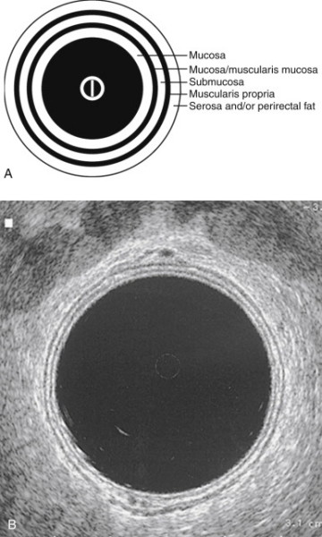
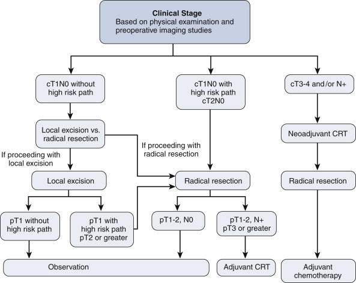
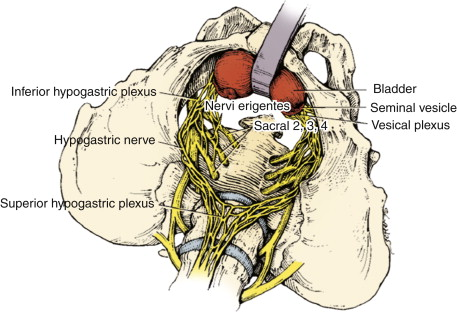

Rectal Cancer
DEFINITION
Cancer of the rectum.
What is the rectum?
Anatomically, from rectosigmoid jx to anal canal.
- about 15-18cm of distal large bowel
Radiologically, the sacral promontory.
Surgically, coalescence of tinea coli; no longer can distinctly
identify tinea.
- preoperatively, a tumour seen 15cm or less from verge should be
classified as a rectal cancer
--> depending on body habitus and sex of pt,
But from oncologic standpoint, it is the distal 10-12cm in
extraperitoneal pelvis (with individual variation).
- intraperitoneal rectum behaves like colon cancers in terms of
recurrence and prognosis.
D E A B M I M
EPIDEMIOLOGY
~30% of colorectal cancer.
Risk same as for colon cancer.
D E A B M I M
AETIOLOGY
same as for colon
cancer.
D E A B M I M
BIOLOGICAL BEHAVIOUR
same as for colon
cancer.
D E A B M I M
MANIFESTATIONS
Take a detailed family history.
- consider hereditary and familial syndromes.
Symptoms
see colon
cancer.
Assessments
Must perform PR and sigmoidoscopy
- determine distance from verge, mobility, and position in
relation to sphincter complex.
DRE
- size, degree of fixation, location relative to upper anorectal
ring.
Rigid Sig
- delineate orientation (anterior, lateral, posterior)
- circumferential involvement
- precise measure of distance from anal verge.
--> important for pre-op planning, neoadjuvant therapy,
preservation of anorectal function, need for stoma.
Assess for metastatic disease
see colon
cancer.
D E A B M I M
INVESTIGATIONS
CEA
Baseline required, for post-operative monitoring purposes.
Haematology
Basic FBC and biochem panel, LFTs, coags.
Imaging
Accurate pretreatment imaging
1. Delineate depth of penetration into rectal wall.
2. Assess locoregional lymph involvement.
3. Determine metastatic disease.
Options depend on local resources and availability / expertise.
Endorectal US
As with MRI, locoregional staging.
Clinically assesses T and N stage
Accuracy variable / operator dependent
- ~60-90% for T and N stage; perhaps lower end of spectrum.

MRI
Phased-array MRI = relatively new modality, shows breaches to
mesorectal fascia.
MRI appears to have better accuracy for T3/T4 lesions.
Nodal staging comparable.
Less operator dependent, but higher cost and access barriers.
CT
Chest, abdo, pelvis for M stage
Less accurate for T and N stages; limited role in locoregional
staging.
PET
Increasingly used, but no clear role yet
No advantage over ERUS or MRI, not routinely indicated for primary
disease.
Good for distant mets, recurrent disease and interdeterminate
lesions.
Colonoscopy
Must clear the rest of the colon; 1-3% will have synchronous
tumours.
- and 30% will have synchronous polyps.
In case of incomplete colonoscopy, then double-contrast Ba enema and
CT colonography.
Staging
Used to individualize treatment strategies and to prognosticate
Current recommendations (NCCN):
1. colonoscopy
2. CBC, electrolyte panel,
3. CEA,
4. CT (chest / abdo / pelvis); contrast enhanced
- if dye allergy then MRI abdo / pelvis and non-con CT chest
5. MRI (specific rectal protocol) or EUS essential staging
for rectal cancers
--> each has its advantages
--> EUS may be better at distinguishing T1 / T2; much less
accurate for large bulky T4 lesions; impossible in stenotic lesions
--> MRI may be better for larger tumours and nodes, and
particularly good for CRM (below)
--> Nodes are difficult as sizing of benign and malignant
overlap; but MRI can also assess for mixed signal integrity and
irregular borders
6. 'Tumour circumferential margin (CRM)' from imaging indicates
shortest distance between rectal tumour and mesorectal fascia.
--> positive CRM is prognostic, strongly associated with higher
local recurrence (x4); lower survival
- definition of +ve margin is 0mm, but generally considered +ve if
<1mm
7. PET not routinely used unless suspicious features on CT
need further delineation (but is mandatory before limited
metastasectomy).
True pathologic stage only determined after surgical resection.
There is a need to improve clinical staging.
- definite staging is carried out after resection.
TNM System
y prefix added if previous treatment; accounts for
downstaging
Tx = cannot assess
T0 = No evidence of tumour
Tis = Carcinoma in situ; intrapeithelial or lamina propria invasion
only.
T1 = Invades submucosa
T2 = Invades muscularis propria
T3 = Tumour invades muscularis into mesorectal tissue
- <1mm - involved circ margin
- 1-2 mm - threatened
- >1 mm - not involved
T4 = Invades through fascia into surrounding structures
NX = cannot assess
N1 = no regional nodes
N1 = 1-3 nodes
N1a = 1 node
N1b = 2-3 nodes
N1c = deposits in subserosa, mesentery or nonperitonealized
pericolic / peri-rectal tissues
N2 = 4+ nodes
N2a = 4-6 nodes
N2b 7+ nodes
M0 = No distant mets
M1 = Distant mets
M1a = Mets confined to one organ or site (liver, lung etc)
M1b = Mets in more than one site or on peritoneum
Stage (5-yr Survival
0 = Tis, N0, M0
I = T1-2, N0, M0, (>95%)
IIA = T3, N0, M0 (~90%)
IIB = T4a, N0, M0 (~80%)
IIC = T4b, N0, M0 (~60%)
IIIA = T1-2, N1, M0; T1, N2a, M0 (~80-90%)
IIIB = T3-T4a, N1/N1c, M0; T2-3, N2a, M0; T1-2, N2b, M0
(~50-70%)
IIIC = T4a, N2a, M0; T3-T4a, N2b, M0; T4b, N1-2, M0 (~15-40%)
IVA = Any T, Any N, M1a (poor)
IVB = Any T, Any N, M1b (poor)
D E A B M I M
MANAGEMENT
MDT management
Med Onc, Rad Onc, Path, Radiol
And including preoperative stomal therapist consult.
- extensive pre-op stoma training improves coping, decreases
hospital stay, and saves money
Treatment Algorithm
Multimodal therapy.
Surgery remains the cornerstone of curative therapy.
Stage I patients = surgery alone.

High risk path = poor differentiation; presence of lymphovascular or
perineural invasion, or deep submucosal invasion.
Can also consider local excision in high risk patients with full
informed consent based on risk / balance
Operative Principles
1. Disease factors, patient factors
and surgeon factors all come into play.
- location, extent of disease
- comorbid conditions, baseline anorectal function
- expertise (e.g. transanal, TEMS).
- better results from high-volume surgeons and high-volume
hospitals.
--> with optimal management, local recurrence rates of <10%
can be anticipated.
2. Tis and T1N0
Suitable for local excision to clear margins if no high risk
features.
(LNs not taken).
Low operative morbidity and good anorectal fx
Either trans-anal approach or TEMS
- full thickness excision down to fat
- want macroscopically normal margin of 10mm.
- excised segment should be oriented for pathological exam.
--> no RCTs but TEMS appears to be superior.
Criteria for suitability for
local excision
- tumour location (<8cm from verge) and size (<3cm, involving
<1/3 of circumference)
- clinical features (mobile, not fixed, T1/N0 on EUS or MRI)
- histologic features (not poorly diff, no lymphovasc or perineural
invasion, T1 lesion on final histo)
Issues
The drawback is that LNs are not excised and staged
- even T1 lesions have a 6-11% rate of nodal mets.
LR rate is 7-21%
And up to 25-50% for T2
--> only suitable for T2 cancers when v. poor operative
candidates
Bottom Line
Practiced as a definitive treatment for T1 rectal cancer on moderate
quality evidence.
3. T2N0
Radical resection for anything beyond T1
Consider RT if bulky tumour close to upper part of sphincter
- may reduce tumour mass and allow preservation of the sphincter
complex
- but if tumour actually invades the complex that is obviously
pointless.
4. T3/T4 or N+
Locally advanced disease
Algorithm above gives good long-term outcomes.
- recurrence rate 23%, estimated 10-year survival of ~55%.
Controversy is whether low-risk T3N0 pts needed CRT.
- but they are hard to pick pre-op due to imaging reliability
constraints.
- particularly nodes, which are often missed.
Some cT3N0 are over-staged and some cT2N0 under-staged
Highlights need for improved pretherapy imaging.
In T4 disease, involved adjacent organs should be resected with an
en bloc technique.
5. M disease
Heterogeneous population, individualized therapy.
1. Primary lesion? resectability, symptoms
2. Extent of mets? sites, resectability.
3. Patient factors? age, comorbidity, QOL, wishes.
Common strategy in resectable disease is:
- chemotherapy
- then re-stage
- resect primary and metastatic disease, combined or staged
- followed by further adjuvant considerations
In stage IV disease, systemic chemo may obviate need for surgery.
Symptomatic primary = may benefit from colostomy or stent or
resection
Neoadjuvant / Adjuvant Therapy
('Multi-Modal' Therapy)
Neoadjuvant therapy widely given due to special anatomical
challenges of total resection and local recurrence.
Patients with a seemingly complete response should still undergo
radical resection.
Landmark Trials
Based on studies post-advent of TME surgery
Dutch Colorectal Cancer Group
Trial
- re whether adding pre-op RT to TME improved outcome
--> 5.6 vs 10.9% local recurrence (~50% reduction)
--> and at 2 yrs: 2.4% vs 8.4%
--> but failed to show survival improvement
--> local recurrence rates of tumours >10cm from anal verge
was not affected.
German Rectal Cancer Group
- preop vs post-op chemorads
- preop = less toxicity and
improved 5-yr local recurrence.
These trials support neoadjuvant therapy regimens.
May even downstage tumour to Stage 1, but then standard of care is
still a formal resection.
Preop chemorads = better
compliance, improved local control, reduced toxicity, better
sphincter preservation.
Course Length and Wait for
surgery?
Varies by geography; good evidence to support both types.
- both associated with better local recurrence rates and survival.
Short course in Europe (5Gy for 5 days prior to surgery)
Long in US (total dose 50.4Gy (45 + 5.4 boost) over 5-6 weeks) then
3-4 week interval prior to surgery
- often given with 'radiosensitizing' chemo course.
Longer approach is best able to downsize tumours, allowing
sphincter-preserving therapy (mixed evidence).
- and some evidence for higher rates of positive CRM in short course
Long course = primary option
- short course ok in selected patients, particularly when tumour
regression would not improve resection or sphincter preservation.
Downsides to RadioRx
Increased surgical morbidity
- long-term, worse GI and sexual function.
- worse healing, particularly after APR
- higher rates of bleeding and infection.
In future, better chemo agents may reduce the role for Radio.
Adjuvant Therapy
QUASAR trial : Quick and Simple and Reliable.
- Small RRR in recurrence and death with post-op chemo after CRT and
surgery.
- But overall survival benefit still not convincingly demonstrated.
Current evidence exists from pre TME and neoadjuvant therapy era.
Many patients do not benefit from 5FU and Folfox is recommended.
Bottom Line
1. Adjuvant chemoradiotherapy for all patients with
stage III or high risk stage II disease who did not receive
neoadjuvant Rx (nodes positive or negative and high T)
- particularly if +ve margins
2. Adjuvant chemo for all patients with stage III or high risk stage
II disease. Strong evidence.
Note on Upstaging
Some patients may be understaged by surgery, then upstaged by final
path.
- should go on to get radio if they missed it according to final
path stage.
--> primary downside is small bowel now in radiation field.
--> also, potentially a more radioresistant hypoxic surgical bed.
Surgical
Considerations
Trans-Anal Excision
Goal is full thickness excision
Use electrocautery to mark a 1 cm margin around tumour
Then incise rectal wall circumferentially down to peri-rectal fat.
Specimen removed in one piece, pinned, brought to pathologist
Close the rectal defect with absorbable suture.
Post-op complications are usually minor; bleeding infection, urinary
retention.
TEMS
Trans-anal endoscopic microsurgery
Excise mid and upper rectal lesions otherwise inaccessible.
Need special endoscopic equipment, CO2 inflation, 40mm endoscope and
binocular microscope on TEM endoscope.
Same principles apply as for trans-anal excision.
Tumours as high as 10cm anteriorly and 15cm laterally and 18cm
posteriorly accessible to TEMS
But very distal rectal lesions not amenable due to seal.
Radical
Resection
Principles
1. Resection of tumour en-bloc with blood and lymphatic supply
(mesorectum).
--> TME resection (extra fascial dissection)
2. Sphincter-preservation preferred
--> as long as technically-feasible and oncologically
appropriate.
--> tumours at 1-2cm above sphincter do not allow adequate distal
clearance with ant. resection
3. Autonomic nerve preservation.
4. Negative circumferential and distal margins.
Usually can be safely performed down to 1cm above the anorectal
ring.
- given favorable habitus and pelvic anatomy.
- easier in females with wide pelvises.
- obese patients and those with long, narrow pelvises = technical
challenge; may preclude restorative surgery.
Contraindications:
- tumor invasion into anal sphincters or levators.
Relative contraindication:
Significantly impaired preop anorectal function
--> APR preferred.
Rarely, access to the pelvis may be too difficult to achieve an
ultra-low.
TME
1979, Heald et al
Never been assessed in a large prospective RCT, but consistently
associated with better outcomes
- lower locoregional recurrence; 3-7% cf historic high rates.
--> Is Standard of Care.
Definition
Complete excision of the rectum visceral mesorectum with pelvic
nerve preservation.
Mesorectum = fatty
tissue that encompasses the rectum
- contains lymphatic elements from rectum, encased by visceral
fascia.
Method
Sharp dissection in areolar plan between
- visceral fascia enveloping rectum / mesorectum
- and parietal fascia overlying sacrum and lateral pelvic wall
structures.
When properly performed:
- results in en bloc removal of primary rectal cancer and mesorectum
as an intact package.
Sharp dissection leads to accurate nerve identification and better
nerve preservation rates.
For middle and low cancers, entire mesorectum mobilized and
resected.
- for upper cancers (>10cm) tumor-specific excision; mesorectum
divided at a right angle to bowel 5cm distal to mucosal tumour edge.
Autonomic Nerve Preservation

Sympathetic nerve roots arise from T12-L3 ventral nerve roots -->
form superior hypogastric plexus.
- distal to aortic bifurcation, this plexus --> hypogastric
nerves.
--> these may be intimately associated with the visceral fat of
the mesorectum.
Parasympathetic nerves of pelvis (nervi
erigentes) arise from S2-S4 ventral roots
--> sympathetic hypogastric nerves on pelvic sidewall --> form
inferior hypogastric plexus.
Injury to nerves = substantial genitourinary morbidity
- sympathetic hypogastric nerves --> increased bladder tone,
reduced bladder capacity, impaired male ejaculation.
- parasympathetic system --> voiding difficulty (bladder neck
tone), erectile dysfunction in men, poor vaginal lubrication in
women.
Circumferential Resection Margin
Status of adequate surgical resection margin relative to 360o radial
extension of primary tumour
- includes extension into mesorectom and adjacent extrarectal soft
tissue.
Dutch TME study:
- CRM<2mm = associated with increaesd local recurrence (16% vs
6%).
- <1mm = high risk of distant mets (78% vs 13%) and shortened
survival.
So circ margin >2mm is important.
Distal Margin
NHMRC say want 2cm for fresh and 1cm for fixed.
2-5cm margins traditional standard.
Recent studies have narrowed these limits
- occult disease beneath mucosal edge is uncommon, especially after
CRT.
Margins as small as 1cm may not compromise outcome
Bottom line:
- strive for DRM of 2cm, even after preop CRT.
- but a margin 1cm is acceptable in carefully selected patients with
tumours at or below the mesorectal margin; in absence of adverse
histologic features
- particularly when an APR reqd for a larger margin.
--> distal intramural spread is uncommon; found beyond 1cm in
only 4-10% of tumours.
Frozen section can be used if intra-op distance uncertain.
Vascular Ligation and Lymph Drainage
Proximal ligation at the origin of the superior rectal artery is
appropriate for most rectal cancer resections
Higher nodal yield if IMA ligated (high tie), but no difference in
survival.
- unless clinically suspicious nodes at this level; then high-tie
essential.
But high-tie routinely performed as it improves superior
mobilization for a tension free colo-anal anastomosis.
Suspected para-aortic nodal disease can be biopsied.
It is unnecessary to go after the lateral lymph nodes (common and
internal iliacs)
--> meta-analysis shows no oncologic benefit but increased
urinary and sexual dysfunction.
--> but can be recurrent disease in this area, and disease should
be removed from here if found
Reconstruction Options
Colo-anal anastomosis associated with urgency, frequency, fecal
incontinence.
Several options; colonic J-pouch (CJP), transverse coloplasty
pouches (TCPs) designed to improve outcomes over straight
anastomosis (SA)
- i.e. after very low anterior resection.
--> NHMRC guidelines say colonic reservoir strongly recommended
if anastomosis within 2cm of anorectal jx.
Meta-analyses show that the colonic J-pouch is superior to straight
coloanal anastomosis in terms of reduced bowel frequency and urgency
out to 18m.
--> Use a CJP after very low anterior resection
When not possible (i.e. very bulky colonic mesentery usually), SA is
used.
However, in practice, many colorectal surgeons do not CJP, feeling
that short term minor benefits do not warrant it; and difficult
laparoscopically.
Leak Test
Leaks in 3%+ depending on patient, disease and surgical factors.
Associated with decreased survival and higher rates of local
recurrence.
Test intraoperatively with air instillation while join submerged in
fluid.
--> positively predicts subsequent clinical leak.
--> fix with suture repair, repeat anastomosis or repair and
proximal diversion.
Temporary Diversion
RCTs demonstrate reduction in clinical leak with diverting stoma
with low AR
- Swedish trial 10.3 vs 28% rate.
- and low likelihood of stoma reversal in those defunctioned after
an unprotected leak
Factors associated with leak include:
- male gender
- low anastomosis (<=6cm)
- preop RT
- adverse intra-operative events
Bottom Line:
- diverting loop if coloanal anastomosis and preop external RT.
Ileostomy reversal at 6-8 weeks.
Postponed several weeks if chemotherapy given.
--> Interim office visit to check anastomosis; may become
narrowed followed defunctioning.
Don't need to divert if:
- anastomosis above peritoneal reflection
- leak test -ve
Rectal Washout?
No good evidence for this, but commonly practiced.
Theory is that shed tumour cells may be implanted into the
anastomosis with the stapler; wash out prevents this.
Up to the individual practitioner.
Drains?
Not required
May actually increase rate of leak (not strong evidence)
Widely used for rectal cancers.
APR
During APR, the levator ani should be resected widely en bloc with
rectum and anal canal to avoid compromising the CRM.
- cylindrical fashion to facilitate complete tumour resection.
Combined abdo perineal approach
End colostomy
Higher morbidity
- perineal wound complication rate is high
Lower QOL
Supine lithotomy usual
- prone also good and advocated as a cylindrical specimen retrieved;
more tissue, reduced CRM involvement
Tissue flap reconstruction may be useful.
Extended resections taking pelvic floor required in some cases.
Minimally Invasive Approaches to
Radical Resection
Current evidence suggests lap TME has the same outcomes as open TME
when performed by experienced surgeons.
Mature data from RCTs is still awaited.
Still concern regarding margins, and nerve function but no survival
differences demonstrated.
- nerve funciton may be better under lap magnification in
experienced hands.
Oopherectomy?
Only if ovaries are grossly involved.
Stenting in Obstruction?
Acceptable treatment option.
- bridge to surgery, allowing decompression and primary anastomosis
in selected cases.
- but concern regarding perforation rate, RCTs stopped early due to
this serious complication, better technology needed.
Rectum = higher rate of migration, pain and incontinence.
--> avoid in low rectum due to tenesmus and pain.
Diverting loop ostomy advised if stenting not available.
D E A B M I M
REFERENCES
Cameron 10th
NHMRC guidelines
Practice Parameters 2013